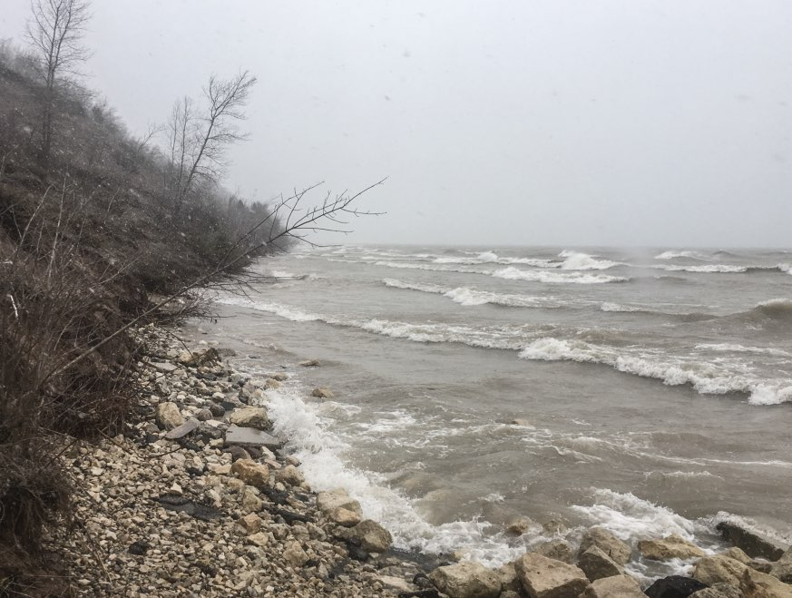
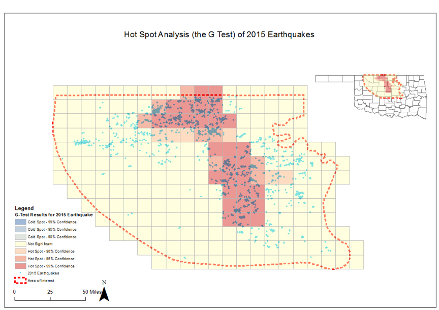
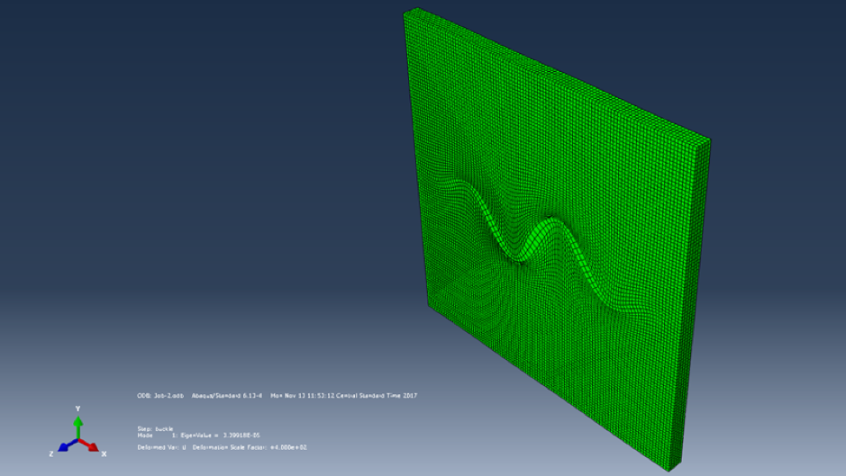
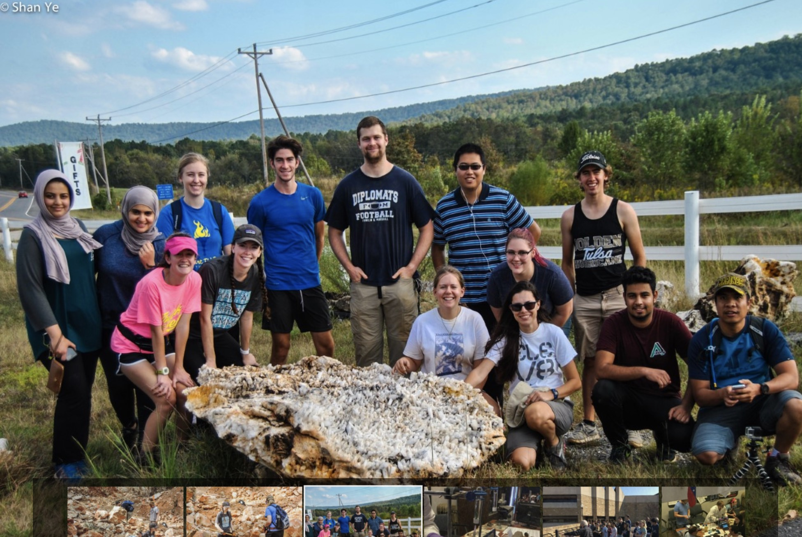
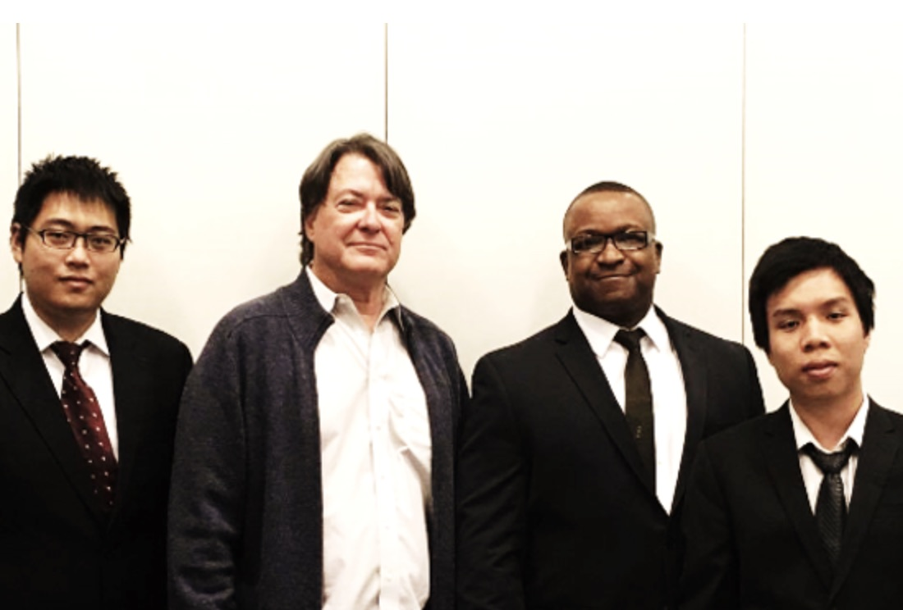
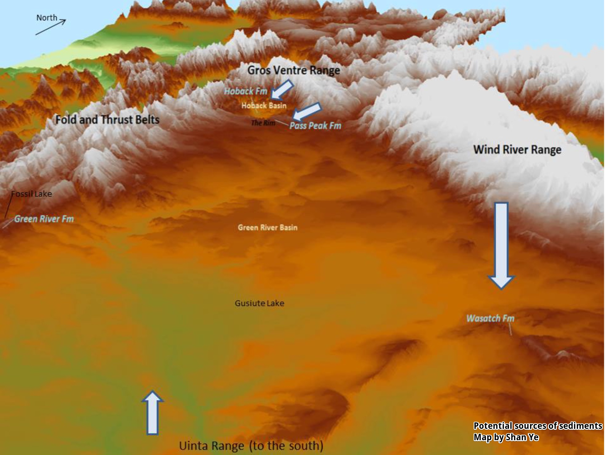
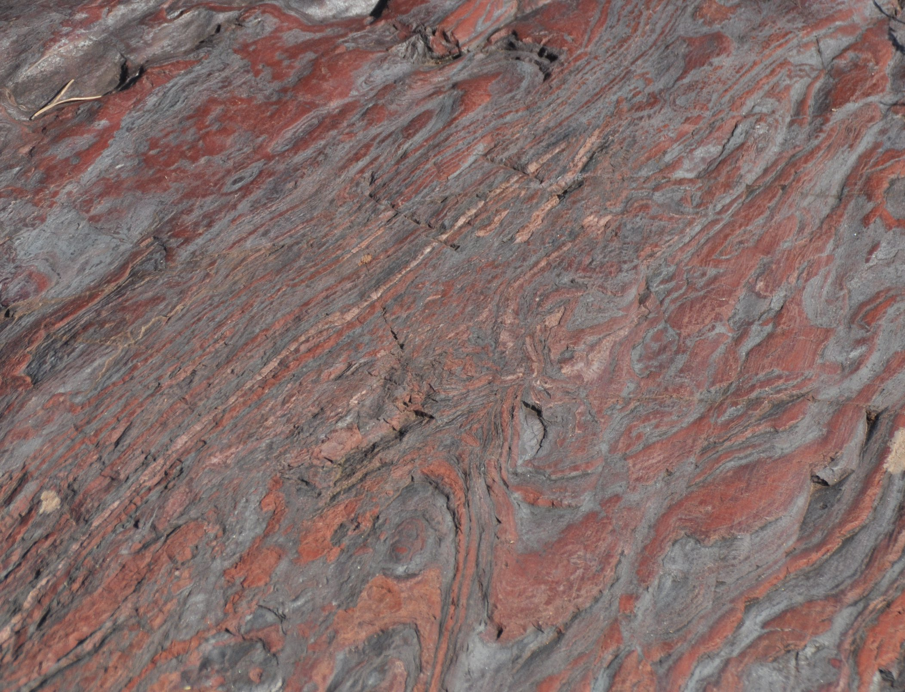
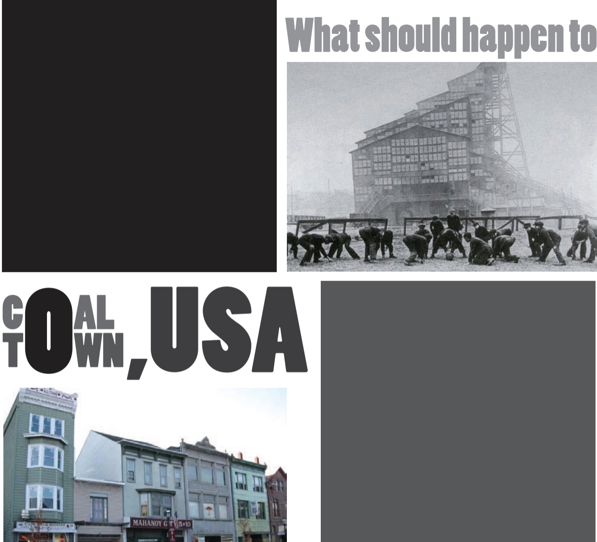

Glacier Field Trip, Eastern Wisconsin
 We went to a field trip to Eastern Wisconsin to explore some geomorphological features and stratigraphic sections left by the Laurentide Ice Sheet during the Last Glacial Maximum. This field trip was led by Dr. Shaun Marcott and Dr. Luke Zoet and was a part of the Spring 2019 course of GEOSCI 420 at University of Wisconsin-Madison. You can use this interactive map (better to use a computer or laptop; mobile devices are not currently well supported) to get more information about those features, some knowledges of Green Bay Lobe and Lake Michigan Lobe of the Laurentide Ice Sheet, and some "fancy" weathers including a white out of an April snow.
Induced Earthquakes in North-Central Oklahoma
 The number of earthquakes in North-Central Oklahoma has increased significantly since 2009. Many publications have been investigating the relationship between wastewater injection and earthquakes. The series of papers by Zoback group describe clearly the spatial relationship between injection wells and earthquakes. In our project, we want to extend the work of Brizendine (2016) in using Phi-H values to better understand the porosity distribution of the Arbuckle group and if there is any relationship between porosity distributions and earthquakes in Oklahoma. The final goal is to help Oklahoma Cooperation Committee determine whether there is a safe injection volume for the oil and gas companies. Collaborators of this project include Tyler Tripplehorn and Nam Pham. Learn More
Visualization of Geoscientist Employment Statistics in the USA
 I made some maps with D3.js library to display the employment statistics of geoscientists in the United States as of May 2018. The reason why I made these maps was to show people how to use D3.js to make maps in a workshop at Tulsa. Check them out to see which states have more and/or better geoscience positions for a geoscience student looking for a job. I moved the entire site here from an old domain recently and some components of these visualizations are lost. You can still view them, and I may also recover them soon. Learn More
I made some maps with D3.js library to display the employment statistics of geoscientists in the United States as of May 2018. The reason why I made these maps was to show people how to use D3.js to make maps in a workshop at Tulsa. Check them out to see which states have more and/or better geoscience positions for a geoscience student looking for a job. I moved the entire site here from an old domain recently and some components of these visualizations are lost. You can still view them, and I may also recover them soon. Learn More
FEM Simulation of Buckling Folds Embedded in Heterogeneous Matrices
 Finite Element Method (FEM) simulations of elastic models of multi-layer buckling with heterogeneous matrices show that the Biot-Ramberg equation is applicable to this type of model in predicting the dominant wavelength of the buckling layer after deformation. The competence ratio in the original equation could be best replaced by the ratio between the elasticity of the target layer and the averaged elasticity of matrices in the elastic model of multi-layer buckling system. The elasticity of the stronger matrix can control the final geometry of the target layer better than the elasticity of the weaker matrix. Final shapes of some of my simulations are asymmetric, especially when the competence ratios between the target layer and the stronger matrix are relatively high. This might be because the heterogeneity of the matrices caused unbalanced buckling progress during the compression, or it might be because of the insufficient space for the dominant wave to be stabilized at the center of the model due to the limited overall size of my models. Models with viscous or viscoelastic properties, and the intermediate stages during the buckling, could be simulated given more powerful computers. This is my M.S. thesis guided by Dr. Bryan Tapp at University of Tulsa. Learn More
Quartz Mining in Arkansas
 As a part of my works during my presidency in the AAPG University of Tulsa chapter, in October 2017, the chapter joined with Dr. Peter Michael and the undergraduate GeoClub in the geoscience department at University of Tulsa and operated a field trip to the Twin Creek Crystal Mine in Arkansas to explore and collect high-quality quartz samples. The Twin Creek Crystal Mine is located at the town of Mount Ida within the Ouachita Mountain. Students participated in this trip used chisels and hand sledges to mine quartz from the veins in the surrounding rocks. It was a great experience to learn about quartz mineralogy and quartz mining.
Turkey Mountain Field Trip
 One of the first major activities we hosted during my presidency in the AAPG University of Tulsa chapter was a half-day field trip to Turkey Mountain near Tulsa, Oklahoma. This trip was guided by Dr. Chatterjee in the geoscience department at University of Tulsa. 13 students attended the hike and learned about the sedimentary processes and paleo-environments that led to the formation of Tulsa area. This activity provided a chance for students to receive experience identifying sedimentary features and learn about future research opportunities with Dr. Chatterjee.
One of the first major activities we hosted during my presidency in the AAPG University of Tulsa chapter was a half-day field trip to Turkey Mountain near Tulsa, Oklahoma. This trip was guided by Dr. Chatterjee in the geoscience department at University of Tulsa. 13 students attended the hike and learned about the sedimentary processes and paleo-environments that led to the formation of Tulsa area. This activity provided a chance for students to receive experience identifying sedimentary features and learn about future research opportunities with Dr. Chatterjee.
IBA Competition 2017
 I participated in the Imperial Barrel Award competition as a member of University of Tulsa team in 2017. This competition provided me a valuable opportunity to process real-world geological data from the petroleum industry. As a team, we processed various types of data (geophysical data, geochemical data, spatial data, well log, etc.) of Taranaki Basin offshore New Zealand, and located 3 oil prospects. We presented our works in front of a group of judges from the industry at the Devon Tower in Oklahoma City. On the group photo of the University of Tulsa team in 2017 from left to right: Shan Ye (structural geologist, GIS analyst and cartographer), John Turmelle (our coach), John Blackwell (geochemist), and Nam Pham (geophysicist, seismologist and well log analyst).
Field Work in Wyoming, 2015
 I took the EARTH 440 (field geology) class during the summer of 2015 at Camp Davis in Wyoming, operated by University of Michigan. I studied four formations in Hoback Basin and Green River Basin in western Wyoming. They cover a time range from late Paleocene to middle Eocene during Paleogene Period. Stratigraphic sections of those four formations as well as the spatial relationships among study sites and other surrounding geographic or topological features can illustrate different depositional environments and different sources of sediments. From field mapping, stratigraphic columns and isotope data of different formations in these basins, we can see that the local climate change between late Paleocene and early Eocene is generally consistent with the global trend of climate change (i.e. the PETM and early Eocene warm period). However, due to the local tectonic activities, such as the volcanic eruptions, the uplift of ranges during Laramide Orogeny and the chemical weathering of the local ranges caused unique climate changes in these basins.
Travel Log Tweets Generator with Geospatial References
 I worked with Boshen Wu, Yimeng Qiu and Haodong Xu and developped a small tool to automatically generate Twitter-styled travel logs based on geographic locations for a class project showcase at University of Michigan. This was my first experience on Natural Language Process with Python. This project was completed in a very short amount of time, so its functions were relatively simple, but it was still able to generate tweets that were somewhat similar to human languages. We trained it with inputs of real tweets with geographic references regarding 11 Michigan cities (downloaded by the crawler that I wrote), and we found out that in some cases, our tool could generate tweets that have reasonable spatial information. Therefore, our project could also be regarded as a simple type of the volunteered geographic information (VGI) collector and generater. The VGI could be applied to business, travel plan, natural disaster management, natural resource management, etc.
I worked with Boshen Wu, Yimeng Qiu and Haodong Xu and developped a small tool to automatically generate Twitter-styled travel logs based on geographic locations for a class project showcase at University of Michigan. This was my first experience on Natural Language Process with Python. This project was completed in a very short amount of time, so its functions were relatively simple, but it was still able to generate tweets that were somewhat similar to human languages. We trained it with inputs of real tweets with geographic references regarding 11 Michigan cities (downloaded by the crawler that I wrote), and we found out that in some cases, our tool could generate tweets that have reasonable spatial information. Therefore, our project could also be regarded as a simple type of the volunteered geographic information (VGI) collector and generater. The VGI could be applied to business, travel plan, natural disaster management, natural resource management, etc.
Field Trip to Upper Peninsula, Michigan
 As a part of the EARTH 315 (mineralogy) class at University of Michigan, we went to Upper Peninsula of Michigan in Fall 2014 semester and explored several different copper and iron mines and other geological features such as pillow basalt, banded iron formation and stromatolites. I was the photographer and web developper for this field trip. I took hundreds of photos of minerals, rocks, geological features and students working in the field. After the trip, I developed a website to showcase my photos, as well as static and interactive maps that I coded for this trip. This was also my first website and UI/UX design experience. Learn More
The Worldwide Education Impact: with the Case Study of Detroit Public Schools
 This project was a part of the Global Scholars Program at University of Michigan in 2013-14 academic year. In this research, we focused on obstacles for achieving the MDG 2, the universal primary education. We firstly analyzed how economy could influence the standards of primary and secondary education in a global scale. We found that the level of development has significant influence on the literacy rate and school enrollment rate in different countries. We then conducted spatial analysis to study the distribution patterns of literacy rate and school enrollment rate, and we found that countries with similar educational situations were distributed in clusters, and the distribution pattern could be explained by geographic factors such as politics, religions and cultures. Next, we drew our attention to public schools in Detroit area. We found out that the graduation rates for Detroit Public Schools have been dramatically low, and it was declining in recent years accompanying with the economic declines in the same area. We also studied some other factors that may negatively influence the education level, such as the quality of instructors and the inequality of receiving educations among different social groups. At last, we analyzed some successful stories to demonstrate how to improve the general education standards in different situations. My roles in this project include literature reviewer, spatial analyst, cartographer and reporter.
This project was a part of the Global Scholars Program at University of Michigan in 2013-14 academic year. In this research, we focused on obstacles for achieving the MDG 2, the universal primary education. We firstly analyzed how economy could influence the standards of primary and secondary education in a global scale. We found that the level of development has significant influence on the literacy rate and school enrollment rate in different countries. We then conducted spatial analysis to study the distribution patterns of literacy rate and school enrollment rate, and we found that countries with similar educational situations were distributed in clusters, and the distribution pattern could be explained by geographic factors such as politics, religions and cultures. Next, we drew our attention to public schools in Detroit area. We found out that the graduation rates for Detroit Public Schools have been dramatically low, and it was declining in recent years accompanying with the economic declines in the same area. We also studied some other factors that may negatively influence the education level, such as the quality of instructors and the inequality of receiving educations among different social groups. At last, we analyzed some successful stories to demonstrate how to improve the general education standards in different situations. My roles in this project include literature reviewer, spatial analyst, cartographer and reporter.
A Study of Declining Coal Towns in Pennsylvania
 In Pennsylvania today, many once prosperous coal and steel towns are on the decline; some have been abandoned altogether. Due to a switch in the dependence on coal to oil or natural gas, and other factors such as changes in technology and foreign competition, the decline of these towns seems inevitable. In this research project, we studied some of these once booming coal and steel towns, and suggest ways in which they can be revitalized. One such method for revitalization is land recycling, enacted under Pennsylvania’s Act 2, and also Tax Increment Financing. These efforts have taken some former Pennsylvania coal and steel towns, such as Bethlehem and the Pittsburgh area, and brought life and prosperity back to them. However, since some towns like Wehram still remain abandoned, our study will be useful in taking success stories of former coal/steel towns, and applying them to towns that have yet to be saved. This project is a part of GEOG 301 class (spatial thinking) at Penn State University. Collaborators include Jae Sung Han, Tim Heckman, Evan Miller, Chiara Orsini, Ben Sereda, Caleb Voithofer, and Shan Ye.
A GUI for Map Line Simplification
 For the final project of GEOG 497C (Object-Oreinted Programming for GIS) class at Penn State University in Fall 2012, I worked with Yiting Ju on the development of a GUI with Java for polyline data generalization. It was an extension to the simple MyGIS platform that we developed throughout the semester. In this GUI, people can simplify lines in their maps by two different methods: the Nth-Point algorithm and Douglas-Peucker algorithm. We explored a number of classes and methods in Swing and JTS packages. This was my first programming class and it introduced me to the world of code and data.
For the final project of GEOG 497C (Object-Oreinted Programming for GIS) class at Penn State University in Fall 2012, I worked with Yiting Ju on the development of a GUI with Java for polyline data generalization. It was an extension to the simple MyGIS platform that we developed throughout the semester. In this GUI, people can simplify lines in their maps by two different methods: the Nth-Point algorithm and Douglas-Peucker algorithm. We explored a number of classes and methods in Swing and JTS packages. This was my first programming class and it introduced me to the world of code and data.
You can also check out my cartographic portfolio site.